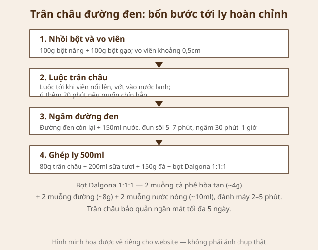

Cà phê sữa tươi trân châu đường đen: pha tại nhà
Tác giả: Ruler
Ly này có ba thứ phải lo cùng lúc: viên trân châu dẻo, sữa tươi mát, và lớp bọt cà phê nếu bạn muốn thêm. Trân châu là phần tốn thời gian nhất, sữa là phần dễ nhất, bọt cà phê là phần dễ hỏng nhất. Bài này không đi theo thứ tự nấu của bất cứ nguồn nào. Nó đi theo ba quyết định bạn phải chốt trước khi bắc nồi: tự nấu trân châu hay mua sẵn, nấu theo công thức nào, và ly này sẽ ngọt tới mức nào. Chốt xong ba việc đó, phần còn lại chỉ là làm theo một mẻ thử nhỏ rồi nhân lên.
Về nguồn, có một điểm cần nói thẳng ngay từ đầu: CET và Vua Pha Chế viết gần như giống nhau từng bước nấu trân châu, nên bài này chỉ tính chúng như một nguồn cho phần đó. Công thức thứ hai, khác hẳn ở lượng bột gạo và cách ủ, lấy từ Dạy Làm Bánh; phần bọt cà phê lấy từ Lyon Coffee. Con số nào cũng ghi rõ nguồn; chỗ nào là gợi ý của bài viết thì bài nói rõ, không gán cho nguồn.
Tự nấu hay mua sẵn?
Trân châu mua sẵn có bán ở các cửa hàng nguyên liệu pha chế — Vua Pha Chế nhắc tới loại trân châu 3Q làm sẵn. Mua sẵn thì khỏi lo nhồi bột, vo viên, luộc và ngâm; bạn chỉ việc nấu nước đường rồi thả viên vào ngâm cho thấm vị. Đổi lại, bạn không chọn được độ dẻo của viên, không biết viên đã để bao lâu, và lượng đường ngâm sẵn cũng do người bán quyết.
Tự nấu thì ngược lại. Bạn mất khoảng một buổi chiều cho mẻ đầu: nhồi, vo, luộc, ngâm. Bù lại, bạn quyết được viên dai hay mềm bằng cách chọn công thức bột, quyết được độ ngọt bằng lượng đường ngâm, và biết chắc viên mới nấu trong ngày. Với người pha lần đầu, hãy tự nấu một mẻ nhỏ trước: hỏng thì chỉ mất một ít bột, thành công thì đã có công thức riêng để nhân lên sau.
Chọn đường đen và sữa trước khi nấu
Đường đen không chỉ tạo ngọt. Màu nâu sẫm của nó tạo ra vệt đường bám quanh thành ly, và mùi của nó đậm hơn đường trắng. Vua Pha Chế phân biệt hai cách làm đường đen đang bán trên thị trường: một cách trộn đường trắng với mật đường, khoảng 10% theo khối lượng, để đổi màu; một cách giữ lại một phần mật rỉ ở giai đoạn cuối khi luyện đường, không trộn thêm gì. Nguồn này khuyên chọn loại giữ mật rỉ, vì vị của nó thanh hơn và thơm dịu hơn. Bài này ghi lại lời khuyên đó theo đúng nguồn, không viết thêm gì về tác dụng của đường đen với sức khỏe.
Sữa thì chọn loại không đường: ly đã có đường đen trong trân châu, trong nước ngâm, và trong bọt cà phê nếu bạn làm thêm lớp bọt. Sữa có đường nữa sẽ đẩy ly qua mức ngọt gắt mà bạn khó cứu lại. Vua Pha Chế khuyên chọn sữa tươi thanh trùng, vị thanh nhẹ, của thương hiệu uy tín.
Hai công thức bột: khác nhau ở một con số
Điểm khác nhau lớn nhất giữa hai công thức nằm ở lượng bột gạo. Bảng dưới đây gom các con số của từng nguồn lại để bạn so một lượt; bảng chỉ đổi cách trình bày, các con số giữ nguyên theo từng nguồn.
| Hạng mục | Công thức A (CET và Vua Pha Chế) | Công thức B (Dạy Làm Bánh) |
|---|---|---|
| Bột năng | 100 g | 100 g |
| Bột gạo | 100 g (Vua Pha Chế ghi bột gạo nếp) | 20 g |
| Bột cacao tạo màu | 5 g | 3 g |
| Đường đen hoặc đường nâu, tổng cộng | 120 g (CET); 200 g hoặc 100 ml dạng lỏng (Vua Pha Chế) | 120 g đường nâu |
| Đường nấu nước nhồi bột | Khoảng 40 g đường đen + cacao | 50 g đường nâu + 3 g cacao |
| Nước ngâm trân châu | Đường còn lại, hòa 150 ml nước; giữ sôi 5–7 phút | 70 g đường nâu + 100 ml nước, đun sôi rồi tắt bếp |
| Thời gian ngâm | 30 phút đến 1 tiếng | Khoảng 30 phút |
| Sữa tươi kèm theo | 200 ml không đường | 300 ml không đường |
| Cách luộc | Vớt ra khi viên nổi lên mặt nước | Nổi lên thì tắt bếp, đậy nắp ủ thêm 20 phút rồi mới vớt |
Hai công thức giống nhau ở bột năng, cỡ viên và cách tạo màu bằng cacao; khác nhau ở bột gạo, lượng đường tổng và cách luộc. Công thức A dùng 100 g bột gạo; công thức B dùng 20 g. Về đường tổng, CET ghi 120 g, Vua Pha Chế ghi 200 g, Dạy Làm Bánh ghi 120 g đường nâu. Bài này không khẳng định công thức nào ngon hơn — không nguồn nào so sánh trực tiếp hai công thức với nhau. Gợi ý của bài viết: lần đầu hãy nấu theo công thức B với một nửa lượng bột — ít bột gạo thì khối bột dễ nhồi hơn khi tay chưa quen, và ủ thêm 20 phút giúp viên chín hẳn từ trong ra ngoài. Nếu viên ra mềm quá so với ý bạn, lần sau đổi sang công thức A. Đừng nấu cả 120 g đường cho mẻ thử đầu; giữ lại một nửa để ngâm, nếm rồi mới thêm — đường thêm vào sau được, lấy ra thì không.
Một lưu ý về nguồn: trong cùng bài của Dạy Làm Bánh, phần lưu ý cuối bài ghi thời gian luộc và ủ là 25–30 phút, khác với bước làm ghi ủ 20 phút. Bài này chỉ dùng con số ở bước làm, không dùng con số ở phần lưu ý, vì hai chỗ trong cùng một nguồn đã vênh nhau.
Tính ngọt trước khi nấu
Ly này ngọt hơn nhiều người tưởng, nên tính ngọt trước khi nấu sẽ rẻ hơn sửa sau. CET và Vua Pha Chế cùng dẫn một phác đồ về lượng đường trung bình trong trà sữa: một cốc ngoài hàng chứa trung bình tới 18,5 thìa cà phê đường, tức khoảng 92,5 g. Cũng theo hai nguồn này, dẫn lời TS Trương Hồng Sơn, Viện Y học Ứng dụng Việt Nam, 1 g đường cho khoảng 4 calo, nên 1 thìa cà phê đường cho khoảng 16 calo. Bài này chỉ ghi lại hai con số đó để bạn biết ly ngọt tới mức nào, không đưa ra lời khuyên sức khỏe cho từng người.
Hai nguồn cùng gợi ý mấy cách giảm ngọt mà không cần đổi công thức: chọn ly nhỏ thay vì ly lớn, uống ít lần trong tuần, yêu cầu pha nhạt hơn, còn khoảng 30% đường so với bình thường, hoặc uống không đường; thay kem sữa bằng sữa tươi thường, và bỏ topping hoặc chọn topping ít calo. Gợi ý của bài viết: áp dụng một cách một lần để lần sau biết ly thay đổi vì đâu.
Mẻ thử: nấu một nửa trước
Đừng nấu hết 100 g bột cho lần đầu. Lấy một nửa lượng bột của công thức B — 50 g bột năng, 10 g bột gạo, một ít cacao — rồi nấu nước đường màu trước: đường nâu với cacao đun sôi, cho viên màu nâu và thơm hơn nước lã.
Chỗ dễ hỏng nhất nằm ở khâu trộn nước vào bột: bột đã nhão thì thêm bột khô vào sau cũng gần như không lấy lại được độ dẻo ban đầu. Vì vậy Dạy Làm Bánh dặn trộn thật chậm — mỗi lần chỉ rót một thìa nước đường, khuấy cho quyện hẳn rồi mới rót thìa kế, cứ thế cho tới khi khối bột vừa đủ ẩm để nhồi. Rót ào cả chén một lúc là cách nhanh nhất để có một khối bột nhão.
Viên chừng nửa phân là vừa: to hơn thì dai ở ngoài mà sống ở trong, nhỏ hơn thì nhanh mềm nhũn. Muốn vo được cỡ đó, khối bột phải thật dẻo mịn — nhồi bằng tay cho tới khi không còn cảm nhận được hạt lợn cợn mới ngắt từng miếng nhỏ ra vo tròn. Trước khi vo, rắc một ít bột khô lên mặt ngoài khối bột cho khỏi dính; viên đã vo xong cũng nên áo qua một lớp bột mỏng để chúng không dính vào nhau lúc chờ luộc.
Khâu luộc có hai cái bẫy: viên dính đáy nồi và viên sống trong. Cái bẫy đầu tránh bằng cách thả viên vào nước đang sôi hẳn và khuấy nhẹ tay ngay từ đầu. Cái bẫy sau thì hai công thức xử lý khác nhau: CET và Vua Pha Chế vớt viên ra ngay lúc vừa nổi lên mặt nước, thả vào bát nước lạnh rồi vớt ra để ráo; Dạy Làm Bánh tắt bếp, đậy nắp, để yên thêm 20 phút cho viên chín hẳn từ trong ra ngoài rồi mới vớt ra nước lạnh. Với mẻ thử đầu, bài này chọn cách ủ thêm, vì viên chưa chín trong thì ngâm đường bao lâu cũng không cứu được; ngược lại, viên đã chín kỹ rồi thì ngâm bao lâu vẫn dẻo.
Nước ngâm cũng có hai cách, ghi trong bảng dưới.
| Cách ngâm | Đường và nước | Thời gian |
|---|---|---|
| Theo CET và Vua Pha Chế | Đường đen còn lại hòa với 150 ml nước; giữ sôi 5–7 phút rồi tắt bếp | 30 phút đến 1 tiếng, cho tới khi viên thấm vị |
| Theo Dạy Làm Bánh | 70 g đường nâu hòa với 100 ml nước; đun sôi rồi tắt bếp | Khoảng 30 phút |
Vua Pha Chế còn ghi một cách khác nếu bạn dùng đường đen dạng lỏng: rót khoảng 70 ml vào trân châu vừa nấu thay cho bước đun nước ngâm, giữ lại khoảng 30 ml để đổ quanh thành ly lúc ghép ly.

Hình minh họa tự vẽ — không phải ảnh chụp thật.
Lớp bọt cà phê: chỉ làm khi uống ngay
Lớp bọt cà phê là phần thêm, không bắt buộc, làm theo cách của cà phê bọt biển Dalgona. Nó chỉ ngon trong ít phút sau khi đánh xong — để lâu, bọt mềm dần rồi tách nước — nên chỉ đánh đúng lượng cho số ly sắp uống.
Bảng dưới ghi định lượng cho một ly, lấy từ Lyon Coffee. Dùng một chiếc muỗng duy nhất để đong cả ba thứ, vì muỗng nhà này với nhà khác không giống nhau.
| Nguyên liệu cho một phần bọt | Lượng |
|---|---|
| Cà phê hòa tan nguyên chất | 2 muỗng, khoảng 4 g |
| Đường | 2 muỗng, khoảng 8 g |
| Nước nóng | 2 muỗng, khoảng 10 ml |
| Sữa tươi không đường đi kèm | 150–180 ml |
| Đá viên nếu uống lạnh | 100–120 g |
Trước khi đánh, xem trước ba thứ, xếp theo mức độ hay gây hỏng: dụng cụ trước, loại cà phê sau, lượng nước cuối cùng. Dụng cụ phải sạch và khô hẳn — tô, ca, đầu đánh dính dầu mỡ hay nước đọng đều làm bọt khó lên. Cà phê thì chỉ có hòa tan nguyên chất mới dùng được: bột xay pha phin không tan, để lại cặn, không đánh lên được lớp bọt mịn; cốt espresso hay cà phê phin loãng hơn công thức gốc rất nhiều nên không dùng chung một tỉ lệ với nó; gói 3 trong 1 thì mỗi hãng trộn một tỉ lệ riêng, kết quả khó đoán. Cuối cùng là nước: cho vừa đủ để cà phê và đường tan ra thôi. Hỗn hợp lúc đầu hơi đặc là bình thường; thấy đặc mà vội thêm nước thì bọt lên chậm, loãng ra và tách nước sớm.
Khi đánh, vặn máy đánh trứng lên mức vừa và giữ khoảng 2–5 phút, đồng thời đưa đầu đánh đi khắp tô thay vì giữ yên một chỗ, để bọt lên đều khắp. Đánh bằng phới tay thì mất 5–10 phút, có khi lâu hơn, tùy sức tay. Bạn biết bọt đã đạt khi thấy bốn dấu hiệu cùng lúc: màu nâu đậm ban đầu nhạt dần thành caramel sáng, hỗn hợp phồng lên và nhiều thể tích hơn, nhấc que đánh lên thì bọt đứng thành chóp chứ không rũ xuống ngay, và nếm thử không còn lợn cợn đường. Với máy tạo bọt mini, hãy chọn một chiếc ly cao, miệng hẹp, để đầu đánh chìm hẳn trong hỗn hợp từ lúc mới bắt đầu, tránh bị bắn ra ngoài.
Bốn dấu hiệu hỏng, xếp từ dễ cứu tới không cứu được. Đánh chưa đủ lâu thì chỉ cần đánh thêm chừng nửa phút rồi kiểm tra lại — hỗn hợp lúc đó vẫn nâu đậm, đầy bong bóng to, vừa nhấc que lên đã chảy tuột xuống. Đường cắt quá tay thì bọt vẫn nổi nhưng đứng không vững, mặt bọt xỉn đi, chảy xuống sữa rất nhanh — muốn ly bớt ngọt, hãy múc ít bọt hơn cho mỗi ly hoặc rót thêm chút sữa không đường, thay vì cắt gần hết đường ngay từ đầu. Nước quá nhiều thì không có cách cứu: đổ hỗn hợp đó đi, đong lại mẻ mới từ đầu. Thêm đường hay cà phê vào để cứu vãn chỉ làm hỏng thêm, vì tỉ lệ đã lệch từ gốc. Và khi bọt đã tách nước rõ — lớp nước cà phê đậm nằm dưới đáy — thì coi như hỏng hẳn: đánh thêm hay đổ chung vào mẻ mới cũng không lấy lại được kết cấu mịn đã mất.
Ngoài cách Dalgona với cà phê hòa tan, Vua Pha Chế còn ghi một biến thể dùng cà phê pha sẵn: đánh bọt từ 20 ml cà phê với 10 ml đường rồi đổ lên trên ly sữa trân châu. Lần đầu làm, bạn nên dùng cách Dalgona với cà phê hòa tan, vì tỉ lệ đã ghi rõ ràng hơn và bọt giữ hình lâu hơn. Cùng nguồn này còn ghi hai biến thể nữa: matcha 2 g hoặc cacao 2 g, mỗi thứ hòa với 20 ml nước sôi rồi rót lên mặt ly.
Ghép ly 500 ml: thứ tự nào để vệt đường không trôi
Cách ghép ly dưới đây lấy các con số từ Vua Pha Chế, cho một cốc khoảng 500 ml; bảng chỉ đổi cách trình bày, các con số giữ nguyên theo nguồn.
| Phần trong ly | Lượng theo Vua Pha Chế |
|---|---|
| Trân châu đã nấu | 80 g |
| Sữa tươi không đường | 200 ml |
| Đá viên | 150 g |
| Đường đen dạng lỏng quanh thành ly | Khoảng 30 ml (nếu ngâm bằng đường lỏng) |
| Kem cheese hoặc kem foam | 100 ml, không bắt buộc |
Ly hoàn thiện có vệt đường nâu sẫm bám dọc thành trong — đó là dấu nhận biết của món này. Để có vệt đó, múc viên trân châu đã ngâm đường ra cốc, vừa múc vừa nghiêng cốc cho nước đường bám lên thành. Nếu dùng đường đen dạng lỏng thì thay bước này bằng cách đổ phần đường còn lại quanh thành cốc.
Xong phần trân châu mới tới sữa: cho sữa tươi và đá vào bình lắc, lắc đều rồi rót vào cốc. Muốn béo hơn, thêm kem cheese hoặc kem foam — phần này tùy ý, không bắt buộc. Sau cùng mới đặt bọt cà phê lên mặt: dùng muỗng lấy từng ít bọt, đặt nhẹ lên sữa rồi dàn đều; đừng đổ từ trên cao xuống, sữa sẽ bắn lên thành ly.
Cách uống cũng khác nhau theo lớp. Phần sữa và trân châu thì hút trực tiếp hoặc khuấy đều rồi uống. Riêng lớp bọt, bạn khuấy nó vào sữa trước đã: nếm bọt một mình sẽ thấy đắng và ngọt đều gắt hơn thực tế, vì ly này chỉ vừa miệng khi hai lớp đã hòa vào nhau — lúc đó vị cà phê dịu xuống, độ ngọt về mức cân bằng.
Cất phần còn thừa
Nấu một mẻ trân châu là nấu cho vài ngày: viên thừa cất ngăn mát giữ được tới 5 ngày, theo cả CET và Vua Pha Chế. Cách cất là cho viên vào hộp thủy tinh sạch, đậy kín nắp, để ngăn mát tủ lạnh; lúc ăn lại thì hâm nóng hộp bằng lò vi sóng, viên mềm dẻo trở lại như mới nấu. Sốt đường đen chưa dùng thì để riêng trong hũ thủy tinh đậy kín ở nhiệt độ phòng — cho vào tủ lạnh, sốt đông kẹo lại và khó dùng. Riêng bọt Dalgona không có chuyện cất: đánh bao nhiêu, dùng bấy nhiêu trong buổi đó.
Sửa lỗi theo dấu hiệu
Bảng dưới đây gom các lỗi hay gặp theo dấu hiệu bạn thấy.
| Dấu hiệu | Có thể do | Sửa thế nào ở lần sau |
|---|---|---|
| Viên dính vào nhau khi luộc | Không khuấy lúc luộc, hoặc để viên ngoài không khí thay vì thả vào nước lạnh | Khuấy nhẹ tay trong lúc luộc; viên nổi lên thì vớt ra thả vào nước lạnh ngay |
| Viên nhạt ở giữa, chỉ ngọt ở ngoài | Ngâm chưa đủ thời gian | Ngâm đủ 30 phút đến 1 tiếng trong nước đường đã đun sôi; đừng rút ngắn thời gian ngâm |
| Bột nhão, không vo viên được | Cho quá nhiều nước vào bột cùng một lúc | Rót nước đường chậm rãi, mỗi lần một thìa, khuấy quyện rồi mới rót tiếp; nhồi tới khi dẻo mịn, áo bột khô chống dính |
| Bọt cà phê không bông hoặc nhanh xẹp | Cà phê sai loại, nước cho quá tay, đường cắt gần hết, hoặc mới đánh chưa đủ lâu | Dùng cà phê hòa tan nguyên chất; đong lại đúng tỉ lệ ba thứ bằng nhau; đánh thêm chừng nửa phút rồi kiểm tra lại |
| Bọt tách nước, có lớp nước cà phê đậm dưới đáy | Nước quá nhiều, đường bớt quá tay, hoặc hỗn hợp để ở nơi nóng | Đánh mẻ mới đúng tỉ lệ; đã tách nước rõ thì đổ đi, đừng cứu bằng cách trộn vào mẻ mới |
| Ly quá ngọt | Đường đen, sữa có đường và bọt cà phê ngọt cộng dồn | Dùng sữa tươi không đường, bớt đường đen từng ít một, dùng ít bọt hơn trên mỗi ly |
Kết luận
Làm tại nhà một ly sữa trân châu đường đen gồm bốn việc, làm theo thứ tự này: chọn đường đen và sữa không đường trước; nấu một mẻ trân châu nhỏ theo công thức B rồi ngâm cho thấm vị; tính ngọt trước bằng hai con số 18,5 thìa và 92,5 g để khỏi pha quá ngọt; cuối cùng mới đánh bọt cà phê và ghép ly 500 ml với 80 g trân châu, 200 ml sữa và 150 g đá. Phần trân châu cất được tới 5 ngày trong ngăn mát; phần bọt thì chỉ làm khi uống ngay. CET và Vua Pha Chế viết gần như giống nhau ở phần trân châu nên bài chỉ tính chúng như một nguồn; công thức thứ hai lấy từ Dạy Làm Bánh.
Nguồn tham khảo
- CET, "Cách Làm Sữa Tươi Trân Châu Đường Đen Ngon Đúng Điệu" — sữa tươi không đường 200ml, bột gạo 100g, bột năng 100g, bột cacao 5g, đường đen Hàn Quốc 120g; 40g đường + cacao nấu sôi làm màu; vo viên khoảng 0,5cm; luộc tới nổi rồi vớt vào nước lạnh; đường còn lại + 150ml nước đun sôi 5–7 phút, ngâm trân châu 30 phút đến 1 tiếng; bảo quản ngăn mát tối đa 5 ngày; trung bình mỗi cốc chứa tới 18,5 thìa cà phê đường (tương đương 92,5g), 1g đường cung cấp khoảng 4 calo (truy cập 24/11/2026): https://www.cet.edu.vn/cach-lam-sua-tuoi-tran-chau-duong-den
- Vua Pha Chế, "TIPS PHA CHẾ: SỮA TƯƠI TRÂN CHÂU ĐƯỜNG ĐEN" — sữa tươi trân châu đường đen xuất xứ từ Hàn Quốc, đường đen Hàn Quốc là nguyên liệu quyết định hương vị; cốc 500ml: 80g trân châu, 200ml sữa tươi + 150g đá; ngâm đường: 160g đường đen còn lại + 150ml nước, sôi 5–7 phút, ngâm 30 phút đến 1 tiếng (hoặc 70ml đường đen dạng lỏng); biến thể café: đánh bọt hỗn hợp 20ml café + 10ml đường rồi đổ lên trên; biến thể matcha 2g + 20ml nước sôi, cacao 2g + 20ml nước sôi; bảo quản tối đa 5 ngày; đường đen thương mại trộn đường trắng với 10% mật đường, đường đen tự nhiên giữ mật rỉ ở giai đoạn cuối (truy cập 24/11/2026): https://vuaphache.net/cong-thuc-sua-tuoi-tran-chau-duong-den
- Lyon Coffee, "Cách làm cà phê bọt biển Dalgona bông mịn tại nhà" — tỉ lệ 1:1:1: 2 muỗng cà phê hòa tan (khoảng 4g) + 2 muỗng cà phê đường (khoảng 8g) + 2 muỗng cà phê nước nóng (khoảng 10ml); sữa tươi không đường 150–180ml; đá 100–120g; đánh máy 2–5 phút tới khi tạo chóp mềm, màu nâu caramel; không dùng bột cà phê xay pha phin hay gói 3 trong 1; tên gọi phổ biến từ Hàn Quốc năm 2020 (truy cập 24/11/2026): https://lyoncoffee.com.vn/cach-lam-ca-phe-bot-bien-dalgona-tai-nha/
- Dạy Làm Bánh, "Hướng dẫn pha sữa tươi trân châu đường đen The Alley" — bột năng 100g + bột gạo 20g, bột cacao 3g, đường nâu 120g, sữa tươi không đường 300ml; luộc tới khi trân châu nổi lên mặt nước thì tắt bếp, đậy nắp ủ thêm 20 phút rồi vớt vào tô nước lạnh; nấu 70g đường nâu với 100ml nước rồi ngâm trân châu khoảng 30 phút (truy cập 24/11/2026): https://www.daylambanh.info/2020/05/huong-dan-pha-che-sua-tuoi-tran-chau-duong-den-the-alley.html?m=0